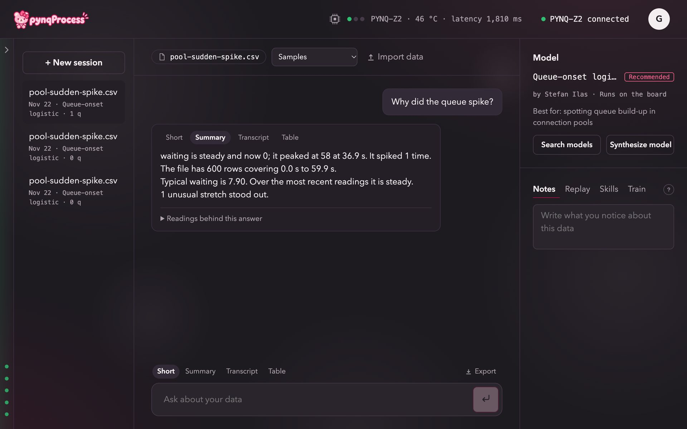
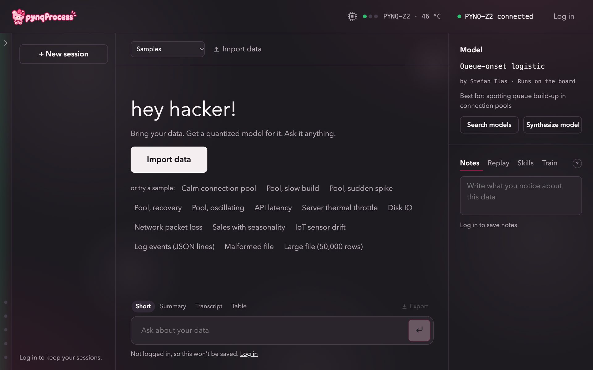
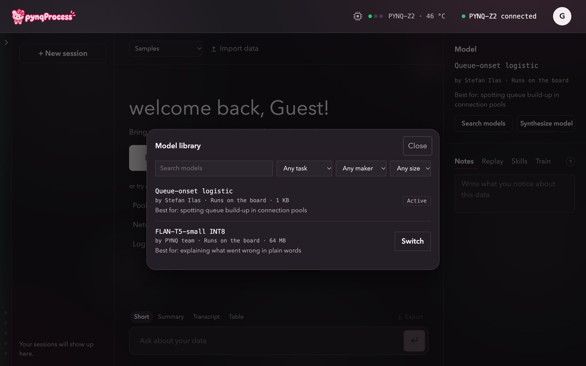
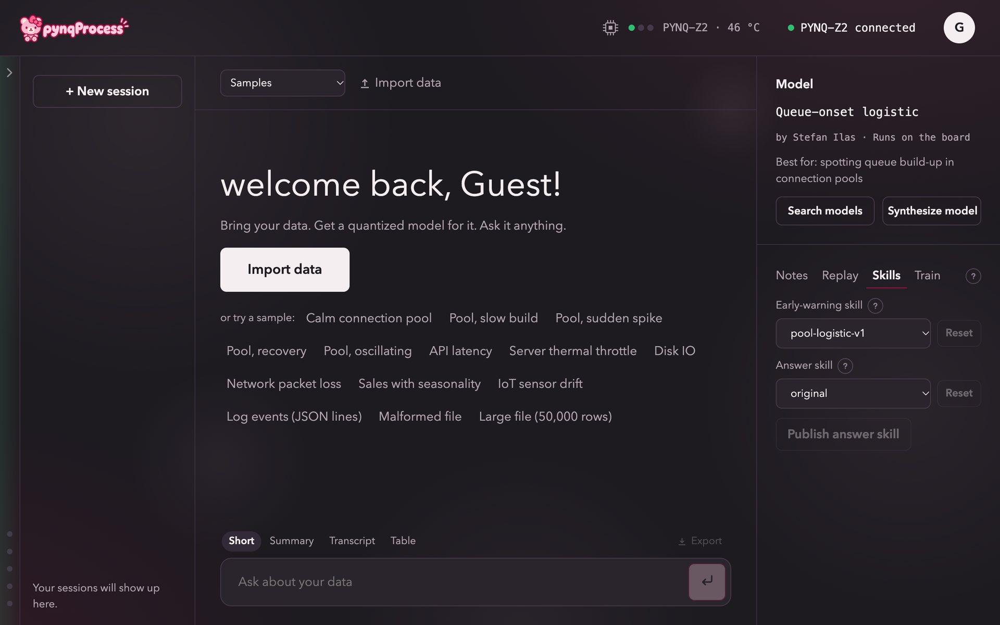

hey, ask yourdata anything.
PYNQ Process is a Mac app. Drop in a file, it picks a small quantized model, and a PYNQ-Z2 board answers in plain words.
PYNQ-Z2 connected
first words · 9,340 ms
Short · Summary · Final

the hot path
one question,
five stops.
ReadyScroll to send a question down the path.
1 msData
0 msProfile
1 msModel
9,340 msPYNQ-Z2
17,570 msAnswer
0 / 5
times from the app strip and recorded board runs
snapshots
what's inside.




that's the
whole app.
Get itanswer styles
hear it your way.
Shortone line, first to land
Summarythe shape of the whole file
Finalthe board's full diagnosis
Transcriptwhat happened, in order
Tablethe same, in rows
Why did the queue spike?
600 readings · pool-sudden-spike.csvpeak 58
take it home.
One zip. Unzip it, open it, find your board.
Download for Mac